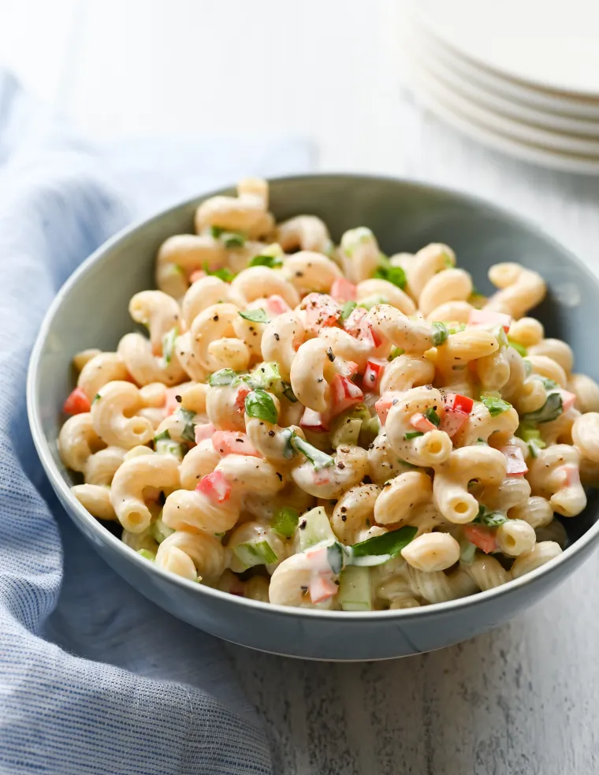

A Better Macaroni Salad
This macaroni salad has all the appeal of the old-fashioned, mayo-dressed version but with a few updates to make it
taste brighter and better.

INGREDIENTS
- 1 pound macaroni, cavatappi, farfalle, or fusilli pasta
- 1 cup mayonnaise, best quality such as Hellmann's or Duke's
- 1 cup sour cream
- ⅓ cup sugar
- 1 tablespoon Dijon mustard
- ¼ cup apple cider vinegar
- ¼ cup water
- 1¼ teaspoons salt, plus more for cooking the pasta
- 1 teaspoon freshly ground black pepper
- ¾ teaspoon onion powder
- ½ cup finely diced or grated carrots, from 1 to 2 carrots
- ¾ cup finely diced celery, from 2 to 3 celery stalks
- 1 red, yellow, or orange bell pepper, finely diced
- 6 scallions, light and dark green parts, finely sliced
- ¼ cup finely chopped fresh basil
Steps
- Servings: 8 to 12
- Prep Time: 20 Minutes
- Cook Time: 20 Minutes
- Total Time: 40 Minutes